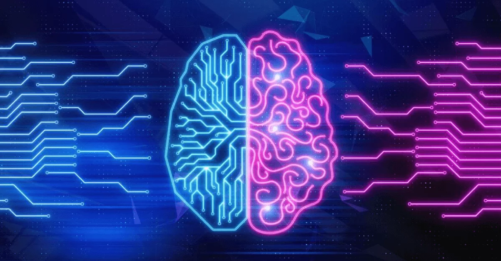

Energia limpa? Inteligência artificial resolve um desafio da fusão nuclear
Usando técnicas de inteligência artificial,
grupo da Universidade de Princeton conseguiu
resolver um problema relacionado à fusão nuclear.
Isso nos deixa mais próximos de uma fonte de energia limpa.

A fusão nuclear é considerada uma das grandes buscas da Física e da
Engenharia desde o século passado.
Pesquisadores propõem que a fusão nuclear é uma possibilidade
de uma fonte de energia limpa e em quantidade suficiente.
No entanto, a busca pela fusão nuclear é um caminho cheio de desafios
e até hoje permanece com perguntas em aberto.
Nossa maior fonte de energia limpa, o Sol, é um exemplo de como a fusão nuclear funciona.
No interior do Sol, a pressão é grande o suficiente para que átomos se fundem liberando
uma grande quantidade de energia.
Nós observamos essa energia através de emissão eletromagnética que
chega em diferentes comprimentos de onda.
Um grupo da Universidade de Princeton utilizou uma técnica de inteligência
artificial chamado aprendizado por reforço profundo para conseguir controlar
a instabilidade do plasma. Esse é um dos problemas
principais para conseguir fusão nuclear. O trabalho foi publicado na revista Nature.
O que é uma fusão nuclear?
O processo de fusão nuclear acontece quando dois átomos se combinam formando um átomo
com núcleo mais pesado. A fusão produz um átomo mais pesado, nêutrons e libera energia
em forma de radiação. Geralmente, os átomos utilizados durante a fusão são isótopos de hidrogênio.
Há um limite para que a fusão nuclear tenha um saldo de energia positivo.
Elementos mais leves que o ferro liberam energia durante a fusão nuclear.
Já elementos mais pesados do que o ferro acabam consumindo mais energia do que liberando.
Isso se torna um problema até mesmo para as estrelas que chegam ao final de sua
vida quando precisam fundir ferro.
Fonte de energia das estrelas

Uma estrela passa boa parte de sua vida fundindo hidrogênio em hélio.
Quando ela está nessa fase, dizemos que ela está na sequência principal.
Na sequência principal, a estrela está em equilíbrio hidrostático onde a pressão no
interior da estrela equilibra-se com o efeito do campo gravitacional.
Quando o processo de fusão é interrompido em uma estrela, o campo gravitacional
força a estrela a colapsar e gerar um objeto compacto como anã branca, estrela de
nêutrons ou buraco negro.
Esse equilíbio permanece por milhões de anos para estrelas massivas e bilhões de anos
para estrelas menos massivas, como o Sol. Algumas estrelas mais frias podem chegar a viver
até trilhões de anos na sequência principal. O brilho das estrelas é resultado da fusão
nuclear que acontece em seu interior.
Inteligência Artificial

O grupo da Universidade de Princeton utilizou uma técnica de inteligência artificial
conhecido como aprendizado por reforço pra prever instabilidades do plasma. Essa técnica
funciona como uma espécie de jogo onde aprendeu por tentativa e erro usando dados
antigos obtidos no experimento. O modelo consegue prever as instabilidades 300
milissegundos antes.
Quando o modelo faz a previsão, é tempo o suficiente para que uma ação seja
tomada para corrigir essas instabilidades. Uma possibilidade de correção é
movendo os ímãs ou os campos magnéticos. A ideia é conseguir corrigir a
instabilidade antes mesmo dela conseguir surgir no interior do plasma.